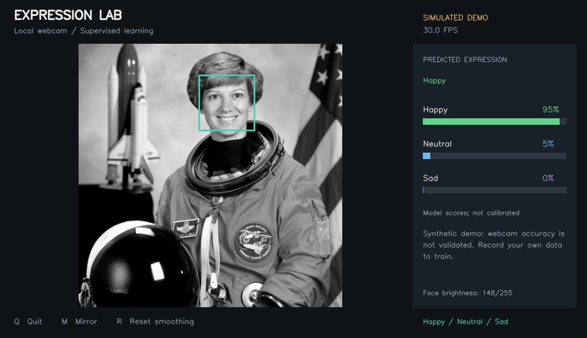
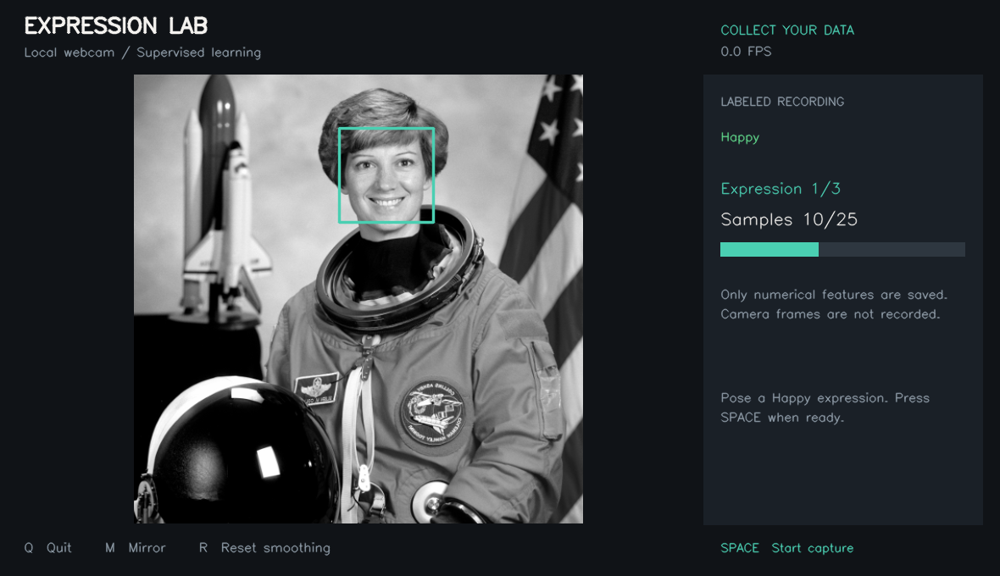

Expression Lab
A local Python app for Happy, Neutral, and Sad facial-expression classification, with labeled recording, model training, and a clear evaluation report.
Get Python
Install 64-bit Python 3.12 with pip, the launcher, and Tcl/Tk. Python 3.11 or 3.13 also works with this dependency set.
Official Windows downloadsExtract and open
Extract the whole ZIP into a writable folder. Double-click START_WINDOWS.bat. First-time dependency setup needs internet.
Open the demo
Click Open assignment demo. Use your camera in good light. Click its window and press Q when finished.
The distinction that matters: the bundled model scores 87.71% on simulated test data. This does not establish webcam accuracy. Record your own labeled sessions to train and evaluate a personal model.

Offline-rendered preview using a public-domain NASA image; the picture is an integration fixture without an emotion ground-truth label. The example FPS counter is illustrative.Train for your webcam
- Click Record labeled session. Pose the displayed Happy, Neutral, or Sad expression, press SPACE, and wait through the two-second countdown.
- Hold the pose while 25 numerical feature samples are collected. Follow all three prompts; a complete session saves 75 rows. Q cancels an incomplete session.
- Repeat for at least five complete sessions. Take a break or change light/position slightly between them. One person should remain visible.
- Click Train my webcam model, then Open evaluation report. Whole sessions are held out for evaluation.
- Click Run my webcam model. Check it on fresh, independently posed expressions and record the results for your assignment.

Controls
| Key | Action |
|---|---|
| Q / Esc | Exit the camera view and release the webcam. |
| SPACE | Start capture for the displayed label during recording. |
| M | Toggle mirrored preview. |
| R | Reset smoothing during prediction. |
Uncertain means the classifier score is below the threshold. Poor image quality or multiple faces pauses prediction. These expression labels and model scores do not measure your internal emotional state.
Test and submit
Run TEST_WINDOWS.bat for the bundled software checks, and Check camera in the launcher for hardware diagnostics. Complete the local webcam checklist before claiming that laptop testing is complete.
- Measured simulated-data evaluation
- Assignment report with results and discussion
- Software test report and validation limits
- Local Windows and webcam checklist
- Troubleshooting and manual setup
Your data stays local
The normal collection flow saves numerical facial features, labels, and session metadata. It saves no camera photos, video, or audio and transmits no camera data. Explicit video export is available only through the CLI. Protect your personal feature dataset as face-derived information.